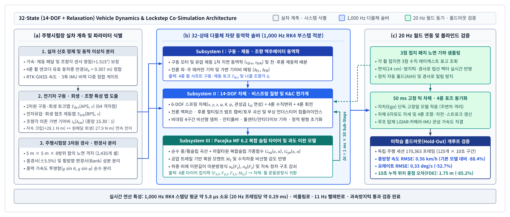
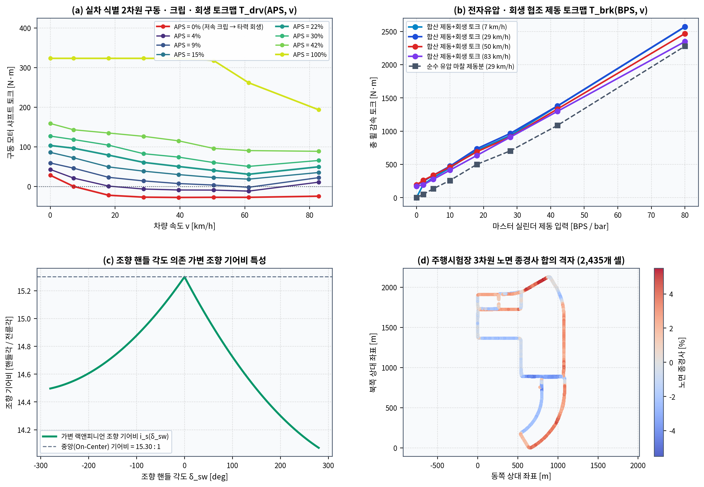
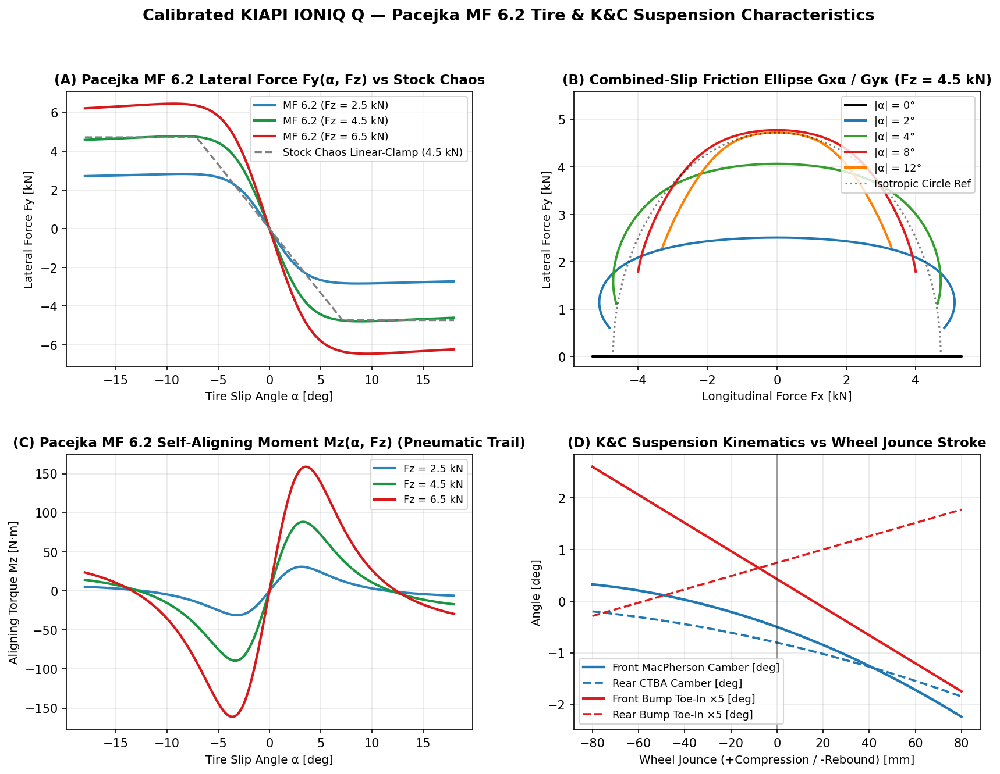
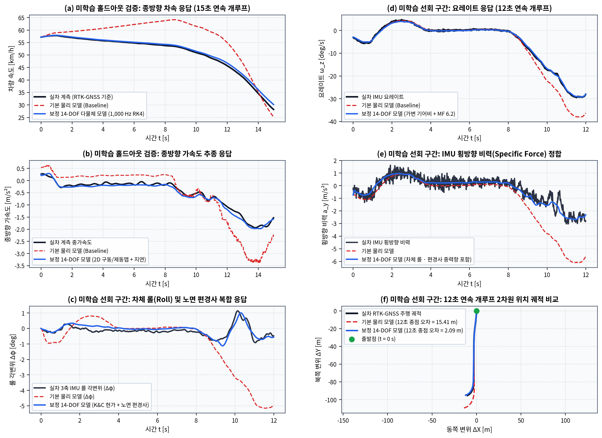
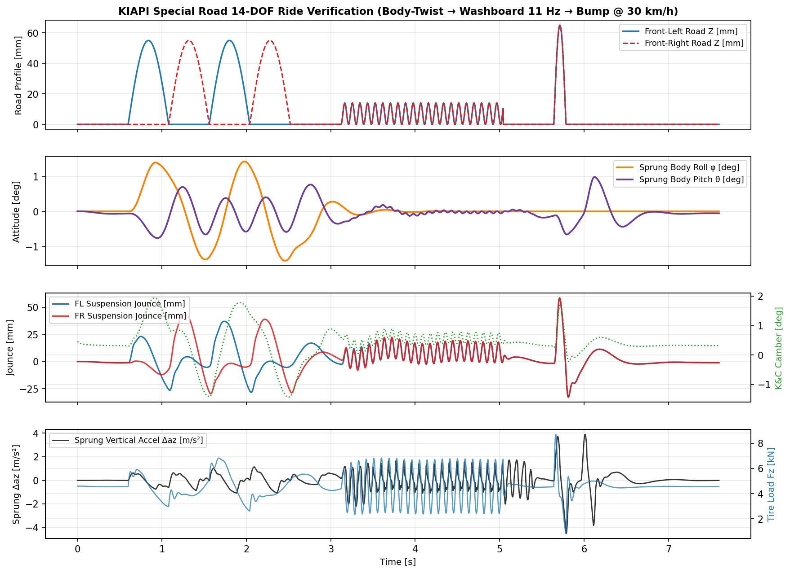
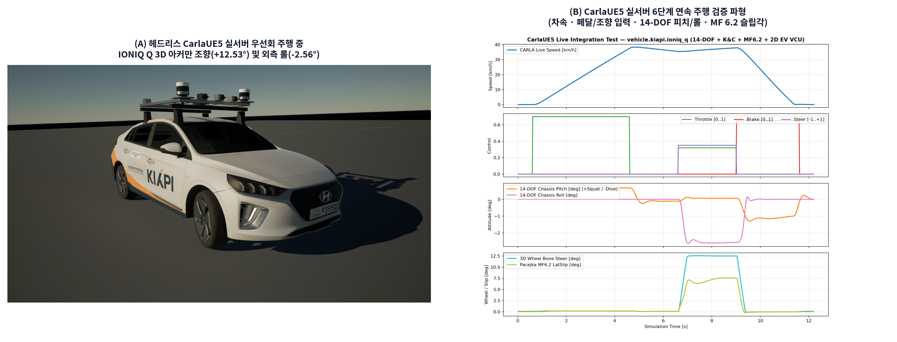
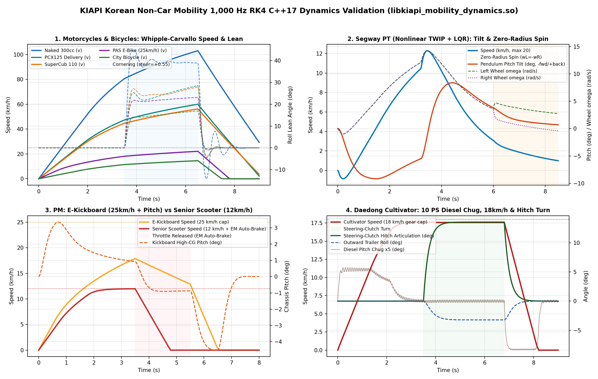
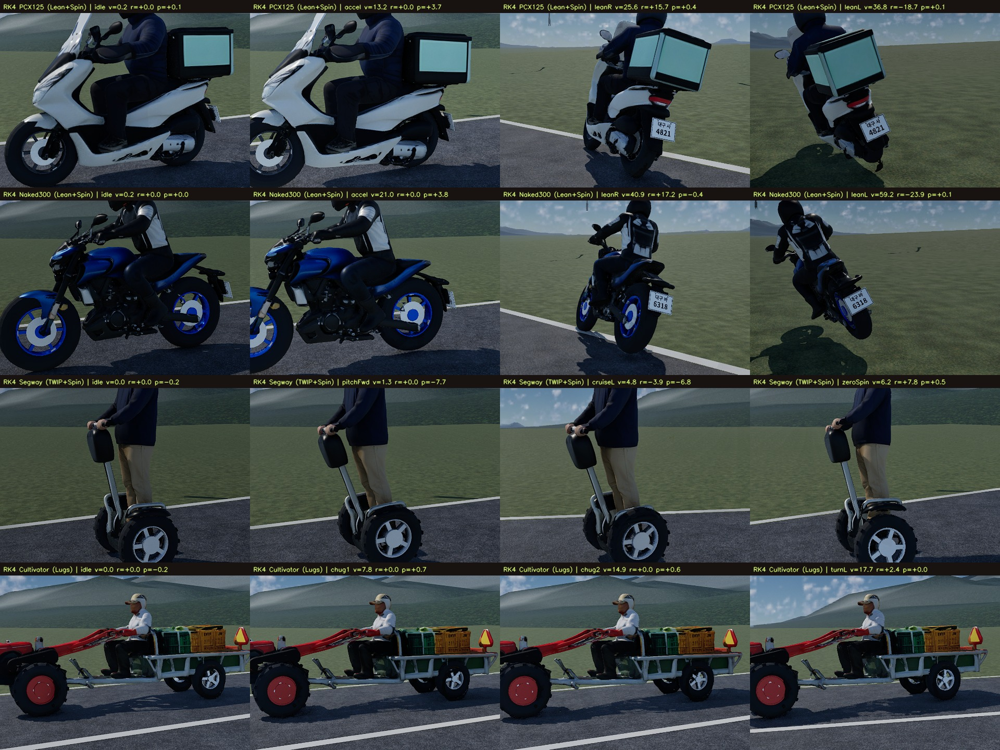

차량 및 비차량 모빌리티 동역학 모델 (Vehicle & Mobility Physics)
실차 주행 데이터 기반 1,000 Hz 14-DOF 전기 시험차 동역학(구동·회생제동, 조향, 4륜 서스펜션, 복합 슬립 타이어)과 이륜차·자전거·전동킥보드·세그웨이·경운기 등 한국형 모빌리티 10종의 전용 다물체 동역학 모델을 설명합니다.
1. 차량 물리 모델 구성 (14-DOF 전기 시험차)
자율주행 제어기를 폐루프(Closed-Loop)로 시험할 때는 제어 명령(목표 가감속도·페달량·조향각)에 대한 차체의 응답 지연과 감속 특성이 실제 차량과 유사해야 제어 게인 진동이나 제동 거리 왜곡을 줄일 수 있습니다.
시뮬레이터는 일반 차량용 기본 4륜 물리(Chaos Vehicle) 외에, 전기 시험차량(vehicle.kiapi.ioniq_q 선택 시 자동 활성화)을 위한 1,000 Hz 서브스테핑 기반 14-DOF(32-상태변수) 차량 동역학 모델을 함께 지원합니다(시뮬레이션 메인 주기는 20 Hz / 50 ms이며 내부적으로 스텝당 50회 적분 수행).

| 구분 | 구성 방식 | 시뮬레이션 반영 효과 |
|---|---|---|
| 종방향 구동 및 제동 | 차속 × 페달량 2차원 구동·회생제동 맵 및 유압 브레이크 데드존 반영 | 전기차 특유의 가속 페달 오프 시 회생제동 감속(Coasting) 및 저속 크립 주행 특성 재현 |
| 조향계 | 차속·조향각에 따른 유효 조향 기어비 및 액추에이터 1차 지연 반영 | 저속 교차로 회전 및 중·고속 차선변경 시 선회 요레이트 응답 정합 |
| 서스펜션 (4륜 독립) | 전륜 맥퍼슨 / 후륜 멀티링크 K&C 테이블 및 다단 비대칭 댐퍼 | 급제동 시 피치(노즈다이브), 선회 롤링, 방지턱·특수노면 수직 진동 모사 |
| 타이어 접지력 | Pacejka Magic Formula 6.2 복합 슬립 및 전이 이완 길이(Relaxation Length) | 제동과 조향이 동시에 인가되는 긴급 회피 기동 시 마찰 한계 내 횡슬립 발생 |
σx,iτ̇x,i + |vcx,i|τx,i = κraw,i|vcx,i|, σy,iτ̇y,i + |vcx,i|τy,i = −vcy,i (Pacejka Magic Formula 6.2)


2. 실차 주행 구간 대조 및 노면 충격 응답 특성
실차 주행 로그의 조향·페달 입력을 인가한 개루프 비교 시험(10초 단위 구간)에서 종방향 속도 오차(RMSE) 약 0.56 km/h, 요레이트 오차 약 0.45 deg/s 수준의 추종 특성을 보이며, 스폰 및 위치 이동 직후에는 평형 서스펜션 변위를 즉시 계산(Warm-Start)하여 초기 차체 바운싱 없이 주행을 시작합니다.



IONIQ Q) 선회 거동 및 1,000 Hz 14-DOF 실시간 물리 텔레메트리(차속·조향·요레이트·횡가속도·차체 롤·4륜 서스펜션 응답).3. 한국형 비차량 모빌리티 1,000 Hz RK4 전용 동역학 모델
이륜차·자전거·전동킥보드·세그웨이·고령자 전동스쿠터·경운기 등 비차량 모빌리티 10종은 일반 4륜 차체 물리로 모사하기 어려운 고유 거동(코너링 차체 기울기, 카운터스티어링, 도립진자 피치 자세제어, 제자리 회전, 농기계 단기통 맥동)을 갖습니다. 이를 위해 1,000 Hz RK4 다물체 솔버 기반 6개 전용 동역학 모델을 적용하고 분리형 3D 휠의 회전·조향과 실시간 동기화합니다(개별 외형 제원은 차량·모빌리티 카탈로그 참조).
| 전용 물리 모델 | 적용 모빌리티 블루프린트 | 핵심 동역학 특성 및 법정 속도 제어 |
|---|---|---|
| Single-Track Motorcycle | pcx_delivery, supercub_delivery, scooter_pcx, naked_bike | Whipple-Carvallo 코너링 롤 린(±25°), 고속 카운터스티어링 과도응답, 캠버 추력, 텔레스코픽 포크 다이브/스쿼트(+3.7° / -5.4°) |
| Whipple Bicycle | city_bicycle, ebike_delivery | 캐스터 트레일 자기안정화(4~8 m/s), 인력 페달링(220 W) 및 전기자전거 PAS 보조(350 W, 국내 법정 25 km/h 컷오프) |
| Standing Kickboard | kickboard | 단축 휠베이스·10인치 휠·기립 탑승 고무게중심(0.98 m) 종방향 피치 전이, 0.9 m 최소 회전반경, 25 km/h PM 법정 제한 |
| Segway TWIP + LQR | segway | 비선형 라그랑주 2륜 도립진자(TWIP) + LQR 피치 자세제어(가속 시 전방 -7.7° 기울기, 정지 시 수직 복원) 및 좌우 차동 토크 기반 제자리 회전(Zero-Radius Spin) |
| Articulated Cultivator | cultivator | 10 PS 단기통 디젤 토크 + 하모닉 맥동 진동, 18 km/h 기어 속도제한, 조향클러치 히치 굴절 및 트레일러 외측 롤 |
| Senior Mobility Scooter | mobility_scooter | 보도·횡단보도 교통약자용 12~15 km/h 속도제한 및 레버 해제 시 전자식 자동제동(Fail-Safe Brake) |
(M + m)ẍ + mlθ̈ cosθ − mlθ̇2 sinθ = (τL + τR) / rw, ωyaw = (vR − vL) / B (LQR Pitch & Zero-Radius Spin)


+15.7° / -23.9°), 세그웨이 전방 피치(-7.7°) 및 제자리 회전, 대동 경운기 분리형 3D 휠 회전·조향.